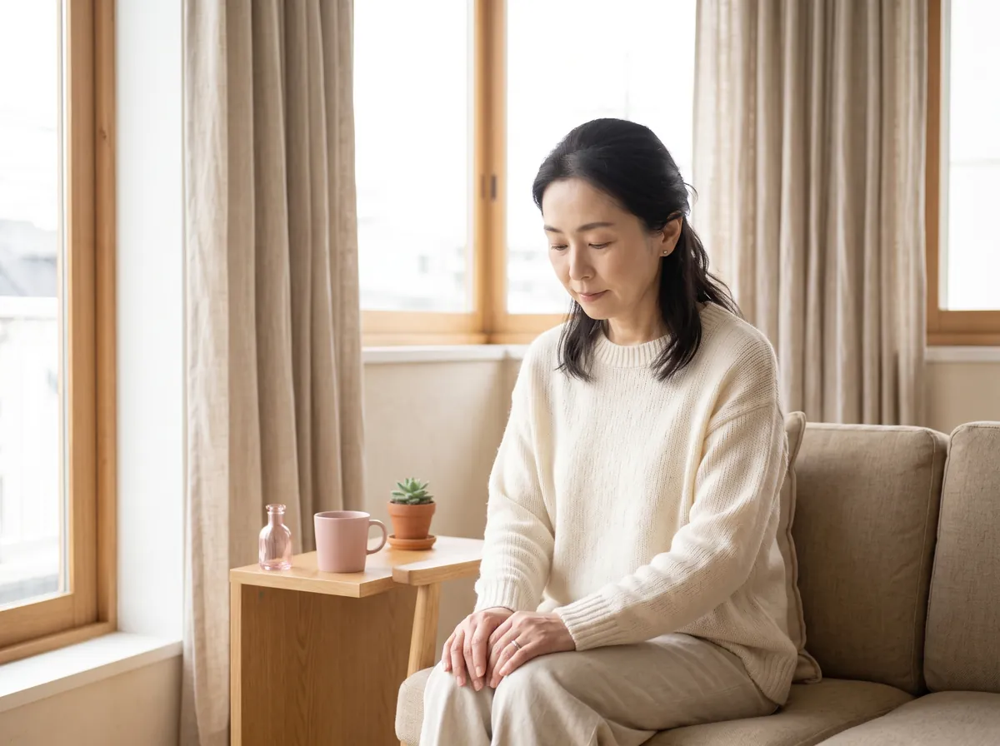
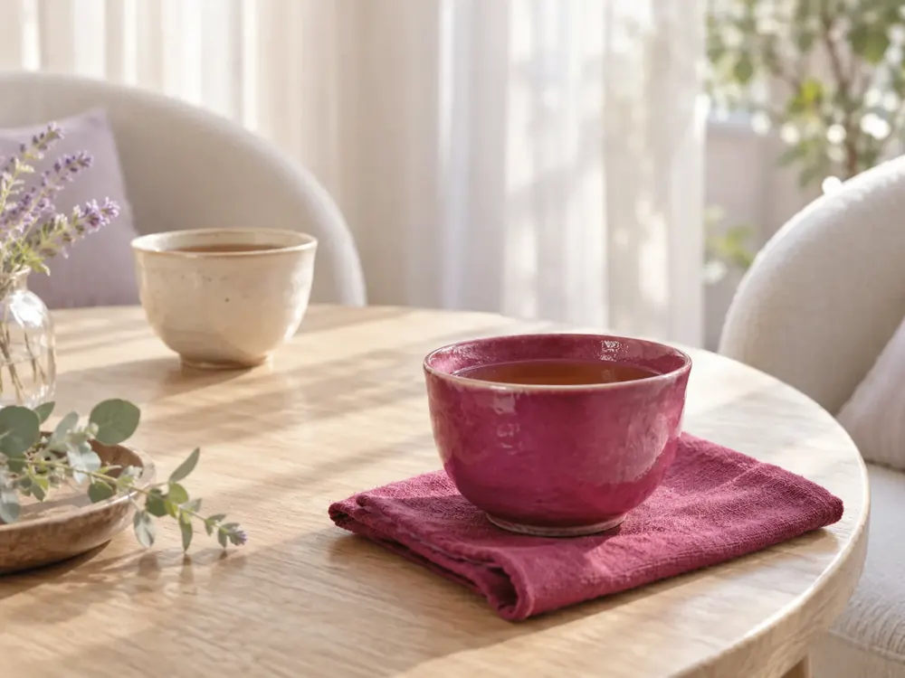
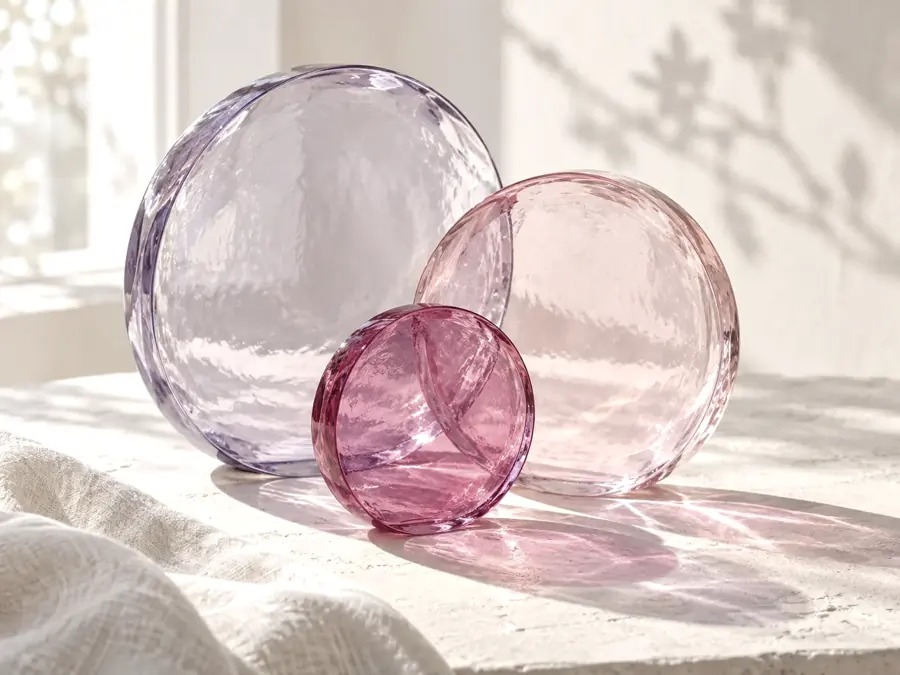
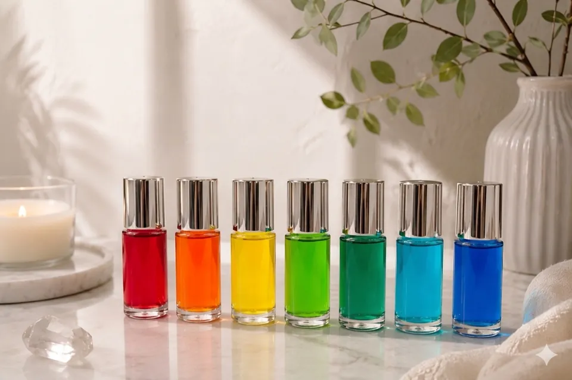

「私はどうしたい？」がわかる
自分の本当の気持ちに気づき、自分で選べるようになる。
PROBLEM

「そろそろ、自分の気持ちを
大切にして生きたい」
そう感じ始めた方へ。


PROFILE
キャリアコンサルタント ／ カラーセラピスト
これまで、小中学校の相談室や家庭訪問による8年間の不登校・ご家族への支援をはじめ、現在は大学で自己理解を中心とした就活支援、そして人生の転換期を迎えた方々の相談など、さまざまな「心と生き方の悩み」に伴走してきました。
多くの方と向き合う中で感じてきたのは、人は「誰かの期待に応えよう」「正しい答えを出そう」と頑張るほど、いつの間にか自分の本当の気持ちから遠ざかってしまうことがあるということです。
私自身も、周りとの調和や人との関係を大切にするあまり、自分の違和感を飲み込み、本音を後回しにしてきました。
「本当は嫌なのに、嫌と言えない」
「こうしたいと思っているのに、相手を優先してしまう」
「頭ではわかっているのに、心がついてこない」
そんなことを繰り返すうちに、「私は本当は、何がしたいんだろう？」と、自分自身の望みさえ分からなくなっていた時期があります。
「自分らしく生きたい」と思っているのに、どうしたらいいのか分からない。そんな迷いやもどかしさを、私自身も経験してきました。
その私が、自分の気持ちを丁寧に見つめ直すきっかけになったのが、色と心理学でした。
直感で選ぶ色を入り口に、自分の内側に目を向けていく。すると、「私は本当はどうしたいんだろう？」という問いに、少しずつ自分の言葉で答えられるようになっていきました。
そして、誰かの正解に合わせるのではなく、「今の自分の気持ちを大切にして生きていい」と思えるようになったのです。
これまで歩んできた道のりを一緒に見つめ直し、今の自分の気持ちを確かめ、これからの人生をあなた自身の言葉で選んでいく。
そのための対話の時間を、色とカウンセリングを通してご一緒できたら嬉しく思います。
COLOR THERAPY

カラーセラピーは、今、気になっている色を手がかりに、自分の心と向き合っていく時間です。
「なぜか、この色が気になる」「最近、この色ばかり目に入る」そんな何気ない感覚を入り口に、「私は今、何を感じているんだろう？」「本当は、どうしたいんだろう？」と、自分の心をゆっくり見つめていきます。
色には、それぞれさまざまなイメージや象徴があります。でも、カラーセラピーは「この色を選んだから、あなたはこういう人」と決めつけるものではありません。
色をきっかけに、自分の中にある気持ちや想いを言葉にしていく。誰かに答えを教えてもらうのではなく、自分自身の中にある答えに気づいていく。私は、そんな時間だと考えています。
色を通して、
「自分の本音」に気づいていく。
あなたは、
どの色が気になりますか？
直感で「なんとなく気になる」と感じる色。
そこから、今のあなたの心を見つめる時間が始まります。
TRANSFORMATION
自分の本当の気持ちに気づき、自分で選べるようになる。
イライラや違和感の奥にある、自分の心の癖や本音に気づける。
自分の気持ちや時間、エネルギーも大切にしながら人と関われる。
無理に合わせたり抱え込んだりせず、お互いを尊重できる関係へ。
人・物・時間を、「今の自分に必要か？」という視点で選べるようになる。
失敗しても自分を責めすぎず、「これからどうしたい？」に目を向けられる。
自分との関係が整うと、
人との関係も、人生との向き合い方も変わっていく。
オンライン（Zoom）／60分〜90分／8,000円（税込）
VOICES
自分が選ぶ色で今の状態が分かることに興味を持ち、セッションを受けてみました。自分の変化を可視化していただけたことで、前に進む勇気を持てました。
幼少期からの人付き合いの悩みを解消したくて申し込みました。自分の心の傷や考え方のクセが分かり、人間関係への不安にも対処法を教えていただいたことで、安心しました。
やりたいことを形にするヒントが欲しくて受講。並べていただいた色から客観的に自分を理解でき、カラー診断の精度にも感動。振り返るたびに自己理解を深められる時間でした。
自分に自信が持てないことが悩みで相談。直感で選んだ色が、自分の大切にしていることを映し出していると実感し、これからの行動に自信を持って活かしていけると感じています。
心の傷を癒やし、これからの指標にしたいと思い受けました。潜在意識の状態を的確に言い当てていただいた驚きと感動があり、節目節目でまたお願いしたいほど満足しています。
SESSION
オンライン個別セッション
まずは今のお悩みやモヤモヤ、日常で感じているお気持ちを丁寧にお伺いします。うまく言葉にならなくても大丈夫です。
直感で選んでいただいた色を通して、ご自身でも気づいていなかった深層心理や「本当の気持ち（本音）」を紐解いていきます。
最後に、今のあなたをサポートし、心を整えてくれる「ヒーリングカラー（癒やしの色）」を選びます。
3 Gifts for youご参加の方に、3つの特典
スマホの壁紙などに設定し、日常の中で心を整えるお守りとしてご活用いただけます。
選んだ色が持つ意味や、日常への取り入れ方をまとめたメッセージをお送りします。
あなたの歩んできた道のりと心の変化を物語として紡ぎ、メールでお届けするオリジナルの読みものです。
オンライン（Zoom）／60分〜90分／8,000円（税込）
HOW TO APPLY
フォームよりお申し込み・
日程調整
お支払い
（カード決済など）
当日のZoomリンク送付
当日セッション開始
FAQ
はい、知識は一切不要です。直感で色を選んでいただくだけですのでご安心ください。
無理に話す必要はありません。色をきっかけに丁寧にお話を伺っていきます。
Zoomが繋がる環境（スマホまたはPC）があれば大丈夫です。
MESSAGE
お申し込みフォーム（別ページ）が開きます。